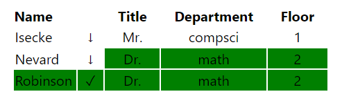

Guess the BCA teacher to win! You have 7 tries, so make them count.
This type of game differs from the typical Wordle format. Teachers have name, title, department, and floor properties. You win when you guess the right name, but if you don't, there's a chance that your guess has the same title, department, or floor as the target. If that happens, that property of your guess will be highlighted in green.
Also, to the right of your guess will be either an upward or downward arrow. If the arrow faces up, the target teacher must come before your guess in alphabetical order. If the arrow faces down, it comes after.
Here's an example showing how the game is played:
The first guess provided no correct information, but we know the target is later in alphabetical order. The second guess gives us a lot more valuable information, as we got the title, department, and floor correct. Finally, on our third try we guessed the right teacher.
Good luck & have fun! 🤟 ~ Umar Mustafa (ATCS '23)